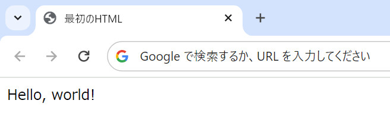
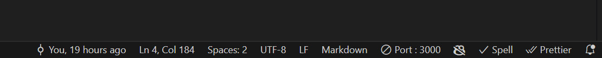
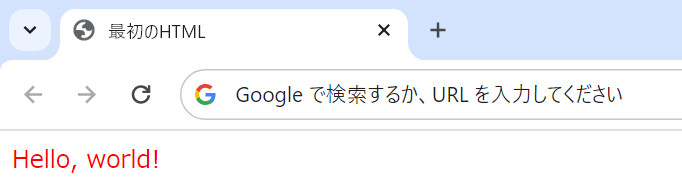

1. ウェブページの作成#
ウェブページとは、ウェブ、即ちWorld Wide Web上のサーバに存在する電子ファイルである。現在、サーバからウェブページを配信する方法は多岐にわたるが、大きくは静的ページと動的ページに大別される。
静的ページとは、予め、ページに表示する内容が電子ファイルに書かれており、その電子ファイルをコンピュータにダウンロードして、ブラウザがその電子ファイルを表示する。静的ページはブラウザが直接閲覧できるHTML形式(*.html)で書かれている。
一方で、動的ページは、サーバ上でページに表示する内容をプログラムによって動的に生成しており、コンピュータはプログラムの生成したページ内容をブラウザを通して表示する。動的ページはCommon Gateway Interface (CGI)のようなサーバ上のプログラムを実行する仕組みによって生成される。
本節では、これらのウェブページの作成方法のうち、HTMLとCSSを用いた静的ページの作成方法ついて学ぶ。
1.1. HTMLの基本#
HTMLはHyper Text Markup Languageの略で、ウェブページの各種要素 (元々はハイパーリンク)を含んだ文書であるHyper Textを記述するためのマークアップ言語の一種である。
マークアップ言語は、文書の構造に従って構造化されたコードを記述するための仕組みで、HTML以外にもXML (Extended Markup Language)やYAML (Yet Another Markup Language, 呼称には諸説あり)などが知られている。
HTMLにおいては、<div>...</div> のようなタグによって文書の構造や要素を定義する。
1.1.1. HTMLタグ#
HTMLの文書はタグと呼ばれる構造の記述子を階層状に記述することで作られる。例えば、段落を表すタグであるpタグ (<p>...</p>)は以下のように使う。
<!-- pタグの使用例 -->
<p>
Hello world!
</p>
このように記述することで、ブラウザ上ではHello, world!の文章が1つの段落であると認識され、ブラウザの初期設定に従って上下にマージン等が挿入される。実際に、上記の内容を記述したHTML文書をブラウザで表示してみると、以下のように表示される (Google Chromeの場合)。
{kind=link}
上記の<p>...</p>は開始と終了を表す要素の組からなっているが、imgタグ (<img />)のように、単一の要素で記述される要素もある。
<!-- imgタグの使用例 -->
<img src="./image/sample.jpg" />
また、各タグは属性によって、各要素の挙動を調整することができる。例えば上記のimgタグの例ではsrc="..."が属性であり、画像ファイルのある場所を相対パスで指定している。
HTMLは要素を階層的に記述するのが一般的であり、例えばpタグとimgタグを組み合わせて、段落内にある画像を以下のように記述することができる。
<p>
<img src="./image/sample.jpg" />
</p>
タグの階層構造は親子関係のように呼ばれ、上記の例ではimgタグはpタグの子要素であり、反対にpタグはimgタグの親要素である。
HTMLにはpタグやimgタグ以外にも、非常に多くのタグが存在するので、「HTML タグ 一覧」などのキーワードで検索して、どのようなものがあるかを確認してほしい。
HTMLタグ
HTMLタグは
<p>...</p>のように開始・終端を表す要素のペアからなるものと<img />のように単一の要素からなるものがある各タグは属性によって付加情報を指定し、その挙動を調整することができる
1.1.2. HTML文書の構造#
ひとつのHTML文書は、.htmlという拡張子を持つファイル内に記述される。文書中には、親要素としてhtmlタグが最初に記述され、その子要素としてheadタグとbodyタグが記述される。
headタグ (<head>...</head>)は、HTML文書のプロパティを指定する役割を持ち、その子要素として、メタ情報を付加するmetaタグや文書のタイトルを指定するtitleタグを持たせることができる。
bodyタグ (<body>...</body>)は、HTML文書の本体であり、実際にブラウザに表示される内容を指定する。例えば、前述の例で示したpタグやimgタグを用いて、ページの表示内容を指定する。
<!-- HTML文書の構造 -->
<html>
<head>
<!-- HTML文書のプロパティを指定 -->
</head>
<body>
<!-- HTML文書の本体を記述 -->
</body>
</html>
1.1.3. HMTL文書のプロパティ#
HTML文書のプロパティの代表的なものにタイトルとテキスト・エンコーディングがある。
タイトルはtitleタグ (<title>...</title>)を用いて指定され、多くのブラウザではページ上部に指定した文字列が表示される。
<!-- headタグの子要素として指定 -->
<title>最初のHTML</title>
一例としてGoogle Chromeでは、以下のようにタブの部分にタイトルが表示される。
{kind=link}
テキスト・エンコーディングは、そのHTML文書がどのようなバイト形式で書かれているのかを示す。英語の文書は基本的にaや1などの文字の表現に1バイト(=8ビット)の情報を使用するが、日本語(&その他の言語)の場合には、「あ」や「大」などの文字に1バイトより多くの情報を使用する。このような文字のことを特にマルチバイト文字と呼ぶ。
マルチバイト文字には、各言語ごとに複数のバイト表現形式があり、日本語なら、Shift-JISやEUC-JP, UTF-8などがある。ネットサーフィン中にページが文字化けしているのを見たことがある人も多いと思うが、これはHTML文書のエンコーディングとHTMLプロパティに指定されたエンコーディングが不一致のために起こることが多い。そのため、日本語等の英語以外の言語でウェブページを作る際には、常に、HTML文書のエンコーディングとHTMLプロパティに指定するエンコーディングが揃っていることを確認することが大切である。
HTML文書のエンコーディングは、Visual Studio Codeなら、画面右下の情報バーから確認できる (下図参照)。
{kind=link}
この画像では文書がUTF-8形式で作成されているので、HTML文書のプロパティにも同様にUTF-8を指定する。指定にはmetaタグを用いて以下のように記述する。
<!-- headタグの子要素として指定 -->
<meta charset="utf-8" />
なお、余談にはなるが、上記のcharset属性はHTML5から導入されたものなので、古いブラウザもサポートしたい場合には、以下のように記述する必要がある。
<meta http-equiv="content-type" content="text/html; charset=utf-8" />
HTML文書
各文書は
.htmlの拡張子を持つテキストファイルに保存するHTML文書はhtmlタグと、その子要素としてのheadタグ、bodyタグからなる
headタグにはタイトルやテキスト・エンコーディングなどの文書プロパティを指定する
bodyタグにはブラウザに表示されるページ内容を記述する
1.1.4. 練習問題#
これまでの内容を基に、単一の段落内に画像が1つだけあるようなHTML文書を作成せよ。この際、テキストのエンコーディングはUTF-8であるとし、文書のタイトルを「最初のHTML」とせよ。
文書をUTF-8で作成した上で、HTML文書のエンコーディングをShift JISに指定するとどうなるか確認せよ (ブラウザによって挙動が異なる)。
1.2. エンコーディング#
文字のエンコーディングは、コンピュータで多言語の情報を扱う上で非常に大切な概念である。コンピュータは、情報を0/1のビットの集まりで表現している。もう一つの情報量の単位であるバイトは8ビット、すなわち、10進数で0から255までの数字を表すことができる。1バイトの情報を書きあわらす時には、8ビットを1単位として、2桁の16進数で表すことが多い。
例えば、77という数字を1バイトの情報として表わす時には、二進数で01001101、16進数で4Dと書くことができる。Pythonでこれらの数字を扱う場合には、二進数であることを表す接頭辞である0b、16進数であることを表す接頭辞である0xをつけて、0b01001101や0x4Dのように書く。
# 2進数による数字の記述
print(0b01001101)
# 16進数による数字の記述
print(0x4D)
1.2.1. ASCIIコード#
コンピュータで文字を扱う場合、英数字のAや1のように1バイトで表わられる文字をシングルバイト文字、あや橋のような2バイト以上を用いて定義される文字をマルチバイト文字と呼ぶ。
シングルバイト文字は、1バイトしか情報を使うことができないので、最大でも256文字しか表せないが、バイト数を2バイト、3バイトと増やすことで、より多くの文字種を表すことができる。
シングルバイト文字は、実際には128文字であり、8ビットの符号付き整数のうち非負の数に対応している。これらの128文字はASCII (Americal Standard Character for Information Interchange)という規格で決められており、例えばAという文字は整数の65に対応しており、0という文字は整数の48に対応している。
Pythonには正の整数を対応する文字に変換する関数chr、ならびにASCII文字を整数に変換する関数ordが用意されている。
print("ASCII code of 'A' is", ord("A"))
ASCII code of 'A' is 65
print("Integer 48 is ASCII code of '{}'".format(chr(48)))
Integer 48 is ASCII code of '0'
ASCIIコードにどのような128文字が含まれるかを確認するにはWikipedia等の情報を確認してみてほしい。
1.2.2. マルチバイト文字#
マルチバイト文字は、日本語などの英数字以外の文字を表すために広く用いられており、言語ごとに定められたエンコーディングの他に、Unicodeと呼ばれる多言語を広くカバーするエンコーディング方式も存在する。
日本語の場合に最も代表的なエンコーディングはShift-JISと呼ばれる方式で、Shift-JISはその後、いくつかの拡張を経てCP932 (Code Page 932)という方式に発展する。実際に、Shift-JISでどのように符号化されているかをencode関数を使って確認してみる。
"あ".encode("shift-jis")
b'\x82\xa0'
"あ".encode("cp932")
b'\x82\xa0'
このようにShift-JISはCP932のサブセットなので、あのような普遍的な日本語の文字には同じバイトが割り当てられていることが分かる。上記の結果を確認すると、あという文字を扱うために0x82, 0xa0という2バイトが用いられていることが分かる。
では、どこに違いがあるかというと、一例として、はしごだか(髙)は、CP932には含まれているが、Shift-JISには含まれていない文字であるため、符号化の際に例外が発生する。
try:
"髙".encode("shift-jis")
except UnicodeEncodeError as e:
print(e)
'shift_jis' codec can't encode character '\u9ad9' in position 0: illegal multibyte sequence
"髙".encode("cp932")
b'\xee\xe0'
従って、Shift-JISやCP932で書かれていると思われる文書を扱う場合には、CP932でデコードしておけば概ね問題ないだろう。
日本語に限らず、コンピュータ上で英語以外の言語を扱う場合、現在は上記のShift-JISなどの特定の言語に特化したエンコーディングを用いる代わりにUnicodeという方式を用いることが一般的になっている。
あがUnicodeでどんな16進数の数字に対応するかはASCIIの時と同じようにordを用いて調べることができる。戻り値は10進数の数字なので、hex関数を用いて16進数を表す文字列に変換する。
print("10進数:", ord("あ"))
print("16進数:", hex(ord("あ")))
10進数: 12354
16進数: 0x3042
このUnicodeをベースにした文字エンコーディングの方式のひとつにUTF-8があり、現在は、Shift-JISなどよりも、こちらが使われることが一般的である。UTF-8の仕組みを理解するために、Unicodeの16進数をUTF-8を表すバイトに変換してみよう。
code = ord("あ") # Unicode
まずは、Unicodeで定義された二桁の16進数 (16ビット)を4ビット、6ビット、6ビットに分割する。
bit1 = (code >> (6 + 6)) & 0x0F # 上位4ビット
bit2 = (code >> 6) & 0x3F # 中間6ビット
bit3 = code & 0x3F # 下位6ビット
print(bit1, bit2, bit3)
3 1 2
続いて、これらの3つの数字をそれぞれ16進数に変換して、3バイトのデータに変換する。
bits = (bit1 << 16) | (bit2 << 8) | bit3
print("10進数:", bits)
print("16進数:", hex(bits))
10進数: 196866
16進数: 0x30102
最後に、得られた数字にUTF-8固有のオフセット値である0xE08080を加算すると、UTF-8で用いられるバイトに対応する数字が得られる。
bits += 0xE08080
print(hex(bits))
0xe38182
この数字が実際にUTF-8のバイト列であに対応しているかをencodeと対になる関数であるdecodeを用いて調べてみる。
byt = bits.to_bytes(3) # 3バイトのバイト列に変換
c = byt.decode("utf-8") # バイト列をUTF-8で文字列に変換
print(c)
あ
このように、正しくUTF-8の文字としてあが表現できていることが確認できた。
エンコーディング
コンピュータで言語を扱うためには、エンコーディングにより、文字をバイト列に変換する必要がある
代表的には、英数字などを扱うシングルバイト文字のASCIIと、その他の多くの言語をマルチバイト文字として扱う方式がある
マルチバイト文字のエンコーディングには言語固有(Shift-JISなど)のものと、多言語対応のUnicodeベースのもの(UTF-8)などがある
1.3. CSSの基本#
CSSはCascade Style Sheetの略で、HTMLのタグや特定のID、クラスを持つ要素に対して、スタイル(= デザイン要素)を指定する役割を持つ。スタイルの指定方法には大きく分けて以下の3つの方法がある。
HTMLタグに属性
style=...を指定する方法headタグの子要素としてstyleタグを配置して指定する方法
拡張子が
.cssのファイルを別に作成する方法
なお、同じ要素に対して複数の異なる指定がなされた場合には、上記のリストの中でより若い番号のものが優先される。
1.3.1. CSSの文法#
CSSによるスタイルは、デザイン要素の名前と、その要素に対するパラメータの組により指定される。一例として、要素の幅を指定したい場合には、
width: 100px;
のように書く。この際、パラメータの後にセミコロンをつけるのを忘れないようにすること。
また、色の指定には、redやblackなどの色の名前 (使える名前の一覧)の他、16進数の組による指定の方法がある。16進数で色を指定する場合には、赤、緑、青の各色要素に対して、0-255の値を16進数で記述する。一例として、黄色 (= 赤: 255, 緑: 255, 青: 0)を指定したい場合には
color: #ffff00;
のように書く。これは、
color: yellow;
と書くことと同義である。
また、デザイン要素の中にはborderのように複数のパラメータを指定できるものもある。例えば、1px幅の線、実線、青色、の属性を持つ線を引きたければ、
border: 1px solid #0000ff;
のようにパラメータを指定すれば良い。
1.3.2. style属性#
では、実際にタグにstyle属性を指定して、その挙動を確認してみよう。pタグにstyle属性を指定して、文字を赤色に変更してみる。
<p style="color: #ff0000;">
Hello, world!
</p>
すると、ブラウザ上では、以下の画像のように文字の色が変更される。
{kind=link}
同様にして、フォントサイズを変更したり、フォントを太字にしたりすることもできる。この場合には、style属性にセミコロンで区切って、複数のスタイルを指定する。
<p style="color: #ff0000; font-size: 20pt; font-weight: bold;">
Hello, world!
</p>
{kind=link}
1.3.3. styleタグ#
headタグの子要素としてstyleタグを用いる場合には、上記のデザイン要素＋パラメータのペアに加えて、それらをどの要素に適用するかを指定する必要がある。
例えば、全てのpタグに対して、文字を赤色、フォントサイズ20pt、文字を太字、というスタイルを指定するには、
<style>
p {
color: #ff0000;
font-size: 20pt;
font-weight: bold;
}
</style>
のようにstyleタグを使用する。
全体ではなく、個別の要素に対してスタイルを指定したい場合には、IDもしくはクラスを用いる。これらはタグの属性としてIDならid="..."、クラスならclass="..."のような形で指定する。これらの指定を持つタグにのみスタイルを適用する場合、CSSの内容は次のようになる。
styleタグの記述
<style>
/* IDとしてredを持つpタグにスタイルを指定 */
p#red {
color: #ff0000;
}
/* クラスとしてblueを持つpタグにスタイルを指定 */
p.blue {
color: #0000ff;
}
</style>
スタイルが適用される要素
<p id="red">
赤色のテキスト
</p>
<p class="blue">
青色のテキスト
</p>
なお、同じデザイン要素に異なるパラメータがIDとクラスの両方で指定された場合にはIDの方の指定が優先される。従って、
<p id="red" class="blue">
何色のテキスト？
</p>
のように書くと、pタグ内部の文字列は赤色になる。これはIDが個別のタグ(= identity)を、クラスが一定の要素の集まり(= class of tags)を指定する目的で使われるものであることと関係する。
また、HTMLのタグが階層構造を持つことと関係して、CSSでは、特定のタグの子要素に対してのみスタイルを適用することができる。例えばpタグの子要素になっているimgタグにのみ囲み線をつけたければ、次のように記述する。
<style>
p img {
/* 1px幅で黒色の実線 */
border: 1px solid #000000;
}
</style>
この例のようにタグやID等をスペースで区切ると、要素の親子関係に基づいてスタイルが指定できる。一方で、気をつけなければならないのは、次のような例である。
<style>
/* スペースなし */
p.red {
color: #ff0000;
}
/* スペースあり */
p .red {
color: #ff0000;
}
</style>
この例ではスペースなしの方は、「クラスがredであるpタグ」を表すのに対して、スペースありの方は、「pタグの子要素のうち、クラスがredであるもの」を表す。このような些細な違いが、結果に影響するので注意したい。
1.3.4. CSSファイル#
CSSファイルを使用するには、拡張子が.cssのファイルを別途用意 (style.cssとする)し、このファイルをHTML文書のheadタグ内にlinkタグを用いて指定する。
<!-- headタグ内に記述する -->
<link href="./style.css" rel="stylesheet" />
この際、href属性に指定するCSSファイルのパスが(絶対パスでも相対パスでも)間違っていないかをよく確認すること。その上で、CSSファイルには、styleタグの内部に記述したものと同様の内容を記述すれば良い。
CSSの基本事項
CSSによるスタイルの指定方法には、style属性、styleタグ、CSSファイルの3つの方法がある
各スタイルは、デザイン要素の名前と、その要素に対するパラメータの組により定義される
個別の要素にスタイルを指定するためにIDやクラスなどの属性が用いられる
1.3.5. 練習問題#
styleタグ、もしくはCSSファイルを用いて、pタグに次のスタイルを指定せよ (以下の実行例を参照)。
テキストの色が青色
テキストが中央揃え
赤色の点線で囲まれている
背景の色が灰色
{kind=link}
図 1.1 実行例#
1.4. 演習#
HTMLとCSSを0から書いて、自分のプロフィールページを作成しよう。その際、以下の要件を満たすように作成すること。
HTMLファイル1つ (
index.html)とCSSファイル1つ (style.css)からなるページにするスタイルは全てCSSファイル内に記述する
画像と外部サイトへのリンクを1つ以上入れる
作成したページはクラス内で限定公開するので、他の人を傷つける内容や公序良俗に反する内容は書かないこと。その代わり、限定公開なので、インターネット上の画像等は常識の範囲内で自由に使って良い。